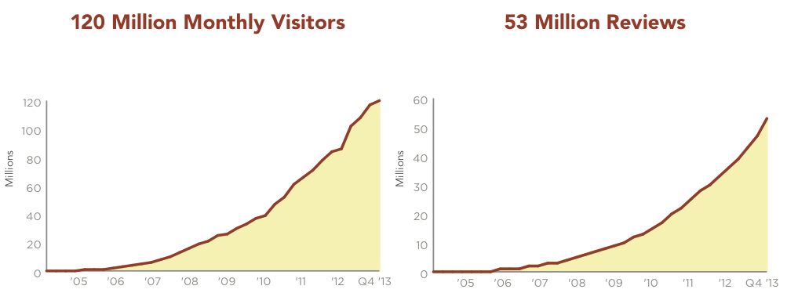

name: inverse layout: true class: left, top, inverse --- # MapReduce ??? ## Spoilers + Don't look ahead in the slides + If you know MapReduce, try to let others answer and genuinely think about how *you* would solve the problem. --- ## Yelp has a problem + 2+ TB of logs per day + Each GB takes at least 2 minutes to process + How long to handle a day's logs?  ??? ## Too long + On a single machine 65+ hours! + If we really had only a single machine, we wouldn't be able to keep up! + Mistake can't be fixed in a day (billing especially important) --- ## Solution? + Don't use one machine! + What are the new challenges? --- ## Solution? + Don't use one machine! + What are the new challenges? + Distributing data + Calculating overall statistics + Failures ??? ## New Challenges + With many machines, how do they get access to the 2 TB of logs? + How do they coordinate who gets which section of logs? + How do we calculate the average? + What happens when one of the boxes dies? + Detecting failure (timeout waiting for data? Out of band?) + Decide who takes over the data --- ## Do It Yourself + There are many ways to deal with these challenges + Often, people would "roll" their own solutions depending on the problem ??? ## Dependencies + Did you have a super-computer? + What programming language were you using? + Type of problem being solved (working on graphs, or web logs, ...) --- ## MapReduce + Google implemented a generic solution and shared the idea <img src="img/mapreduce-paper.png"/> ??? http://research.google.com/archive/mapreduce.html --- ## Big Idea + Simplify, limit solution expression + Enable sophisticated implementation ### Interface + mapper() + reducer() ### Implementation + Reliably use 1,000s of machines for each job ??? ## Really Big Idea + Limiting yourself to what can be expressed may seem like a loss + But it enables the implementation to handle the problems we talked about + And then can be used as understandable building blocks --- ## MapReduce + Mapper + Extracts a property to summarize over + Reducer + Summarizes all items with a particular property ### Simple Constraint + Each operation is stateless ??? ## Reading + Reading this week includes a video explaining MapReduce much more generally + This lecture will focus on it from a practical standpoint for homework + MapReduce's main benefits are for running on many machines, with fault tolerance + But we'll just practice on one machine --- ## Example + Web application logs + Question: How many instance of each of these actions have we seen? + Business views + User profile views + Searches ??? ## Details + Business Views: [I.B.'s Hoagies](http://www.yelp.com/biz/i-b-s-hoagies-berkeley) or [Gypsy's Trattoria Italiano](http://www.yelp.com/biz/gypsys-trattoria-italiano-berkeley) + User profile: [Jimmy](http://jretz.yelp.com) + Searches: [cheese near Downtown Berkeley](http://www.yelp.com/search?find_desc=cheese&find_loc=Downtown+Berkeley%2C+Berkeley%2C+CA&ns=1) --- ## Logs ```json {'page_type': 'search', 'user': 'jimmy', 'query': ...} {'page_type': 'biz_view', 'user': 'shreyas', 'biz_id': 55} {'page_type': 'user_profile', 'user': null, 'profile_id: 123} ... ``` ??? ## Logs + JSON logs, various types of information + entire record on one line (wrapped for slides) --- ## Mapper + Input: Key, Value + Output: Keys, Values --- ## Mapper Example + Input Key: Log line number + Input Value: Log line text + Output Key: Action + Output Value: times this action occurred *on this line* ??? ## Counts + Log line number is not helpful in our specific case + Log line text: we hope it is machine readable so we can accurately extract the action + It has datetime, cookie, action, etc. + How many times has this action occurred? 1 + Tunnel vision: all we care about is this line --- ## Actions? ```text search 1 biz_view 1 user_profile 1 search 1 biz_view 1 search 1 biz_view 1 user_profile 1 search 1 ``` ??? ## Middle Step + From log lines, we've extracted the information out that we care about + The counts and the actions + Next step summarize + Next step after Mapper? --- ## Reducer + Input: Key, Values + Output: Keys, Values ??? ## Values + Note: The input is value*s* (plural) + Because we get a key and all of its associated values + Remind me: what are we trying to get out of this computation? + So what do you think the output keys are? + Values? --- ## Reducer Example + Input Key: Action + Input Values: Counts: ```[1, 1, 1, 1]``` + Output Key: Action + Output Value: Total Count ??? ## Details + Action is *one of* search/biz_view/profile_view + To get total count, sum all of the counts --- ## Example Output + Output Key: Action + Output Value: Total Count ```html "search" 4 "user_profile" 2 "biz_view" 3 ``` --- ## Point? + A lot of work for counting! + More complex calculations can be done this way, eg. PageRank + Stateless constraint means it can be used across thousands of computers ??? ## Details + By only looking at keys and values, can optimize a lot of back-end work + Where to send the results? + What to do when a computer fails? (Just restart failed part) --- ## Implementation ```text biz_view 1 user_profile 1 search 1 search 1 biz_view 1 search 1 biz_view 1 user_profile 1 search 1 ``` ??? ## Intermediate + This was the situation after map + Keys all jumbled + What Hadoop does is sort them and distribute them to computers --- ## "Shuffle" ```text biz_view 1 biz_view 1 biz_view 1 search 1 search 1 search 1 search 1 user_profile 1 user_profile 1 ``` ??? ## Distribute + Now it is easy to distribute, and can handle all the ```biz_view``` at once --- ## Inputs + MapReduce distributes computing power by distributing input + Input is distributed by splitting on lines (records) + You cannot depend on lines being "together" in MapReduce ??? ## Splitting Files + Imagine you have a lot of large log files, GBs each + You'd like to let different machines work on the same file + Split file down the middle, well, at least on a newline + Enable two separate machines to work on the parts + You don't know what line came before this one + You don't know if you will process the next line + Only view is this line + Real life slightly more complicated, but mostly hacks around this --- ## Word Count .tight-code[ ```json {"text": "Greatest pizza ever", "stars": 2, "user": ...} {"text": "good pizza selection", "stars": 5, "user": ...} ``` ] + Total uses of a word across all reviews ??? ## Classic + This is the traditional MapReduce example, so let's solve it + No skipping ahead --- ## Steps ??? ## Hints + What's the first step of MapReduce? --- ## Steps + Mapper ??? ## Hints + What part of the record are we interested in? --- ## Steps + Mapper + Extract the ```text``` of the review ??? ## Hints + What do we want to do with the text? --- ## Steps + Mapper + Extract the ```text``` of the review + Split text up into words ??? ## Hints + Mapper: Key / Value? What are we grouping by? --- ## Steps + Mapper + Extract the ```text``` of the review + Split text up into words + Key: word ; Value: count ??? ## Hints + Next step of MapReduce? --- ## Steps + Mapper + Extract the ```text``` of the review + Split text up into words + Key: word ; Value: count + Reducer ??? ## Hints + What are the reducer inputs? --- ## Steps + Mapper + Extract the ```text``` of the review + Split text up into words + Key: word ; Value: count + Reducer + Key: word ; Values: all counts for that word ??? ## Hints + With all of these counts, how do we summarize? --- ## Steps + Mapper + Extract the ```text``` of the review + Split text up into words + Key: word ; Value: count + Reducer + Key: word ; Values: all counts for that word + ```sum(values)``` --- ## Example + ```"Greatest pizza ever"``` + Mapper --- ## Example + ```"Greatest pizza ever"``` + Mapper + Greatest: ```1``` --- ## Example + ```"Greatest pizza ever"``` + Mapper + Greatest: ```1``` + pizza: ```1``` --- ## Example + ```"Greatest pizza ever"``` + Mapper + Greatest: ```1``` + pizza: ```1``` + ever: ```1``` --- ## Example + ```"Greatest pizza ever"``` + Mapper + Greatest: ```1``` + pizza: ```1``` + ever: ```1``` + Reducer + Key: ```pizza``` + Values: ```[1, 1]``` --- ## Example + ```"Greatest pizza ever"``` + Mapper + Greatest: ```1``` + pizza: ```1``` + ever: ```1``` + Reducer + Key: ```pizza``` + Values: ```[1, 1]``` + Output: ```["pizza", 2]``` --- ## Multi-Step + Not all computations can be done in a single MapReduce step + Map Input: ```<key, value>``` + Reducer Output: ```<key, value>``` + Compose MapReduce steps! ??? ## Output as Input + The output of one MapReduce job can be used as the input to another --- ## Examples + PageRank: Multiple steps till solution converges + Multi-level summaries ??? ## PageRank + PageRank is an algorithm for calculating the importance of a page + But it depends on the importance of every page pointing to it! + So iteratively calculate the importance of all pages + Find average presidential donations by candidate, then normalize averages --- ## Unique Review, Step 1 + Determine the Review ID with the most unique words ??? ## Questions + For our purposes, what is always the mapper input? --- ## Unique Review, Step 1 + Determine the Review ID with the most unique words + Mapper Input: ```<line number, text>``` ??? ## Questions + What feature do we want to calculate first? --- ## Unique Review, Step 1 + Determine the Review ID with the most unique words + Mapper Input: ```<line number, text>``` + Mapper Output: ```<word, review_id>``` ??? ## Questions + Given this mapper output, what *must* the reducer input be? --- ## Unique Review, Step 1 + Determine the Review ID with the most unique words + Mapper Input: ```<line number, text>``` + Mapper Output: ```<word, review_id>``` + Reducer Input: ```<word, [review_ids]>``` ??? ## Questions + What property about a review are we interested in? --- ## Unique Review, Step 1 + Determine the Review ID with the most unique words + Mapper Input: ```<line number, text>``` + Mapper Output: ```<word, review_id>``` + Reducer Input: ```<word, [review_ids]>``` + Reducer Output: ```<review_id, 1>``` if the word is unique ??? ## Questions + Given the reducer output, what *must* the mapper input be (for chained MapReduce steps) --- ## Step 2: Count Unique Words in Each Review + Mapper Input: ```<review_id, 1>``` ??? ## Questions + What do we want to group by? --- ## Step 2: Count Unique Words in Each Review + Mapper Input: ```<review_id, 1>``` + Mapper Output: ```<review_id, 1>``` ??? ## Questions + Given this mapper output, what *must* the reducer input be? --- ## Step 2: Count Unique Words in Each Review + Mapper Input: ```<review_id, 1>``` + Mapper Output: ```<review_id, 1>``` + Reducer Input: ```<review_id, [1, 1, ...]>``` ??? ## Questions + What are we calculating? --- ## Step 2: Count Unique Words in Each Review + Mapper Input: ```<review_id, 1>``` + Mapper Output: ```<review_id, 1>``` + Reducer Input: ```<review_id, [1, 1, ...]>``` + Reducer Output: ```<review_id, sum>``` ??? ## Questions + Given the reducer output, what *must* the mapper input be (for chained MapReduce steps) --- ## Step 3: Max + Mapper Input: ```<review_id, sum>``` ??? ## Questions + We're calculating a statistic over what portion of the data set? + How do we get all of the data to one reducer? --- ## Step 3: Max + Mapper Input: ```<review_id, sum>``` + Mapper Output: ```<"MAX", [sum, review_id]>``` ??? ## Questions + Given this mapper output, what *must* the reducer input be? --- ## Step 3: Max + Mapper Input: ```<review_id, sum>``` + Mapper Output: ```<"MAX", [sum, review_id]>``` + Reducer Input: ```<"MAX", [[sum, review_id],...]>``` ??? ## Questions + What stat are we calculating? --- ## Step 3: Max + Mapper Input: ```<review_id, sum>``` + Mapper Output: ```<"MAX", [sum, review_id]>``` + Reducer Input: ```<"MAX", [[sum, review_id],...]>``` + Reducer Output: ```<review_id, sum>``` of the ```max(sum)```